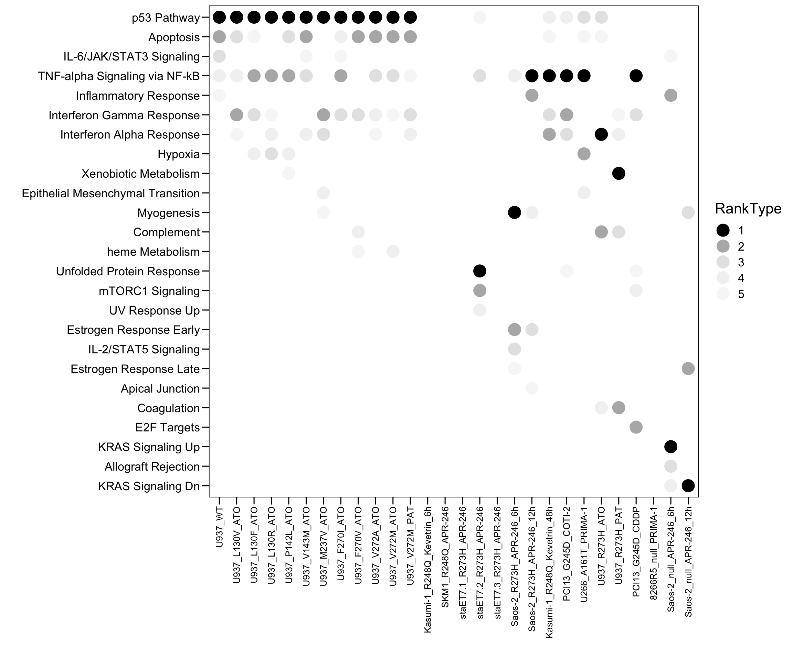
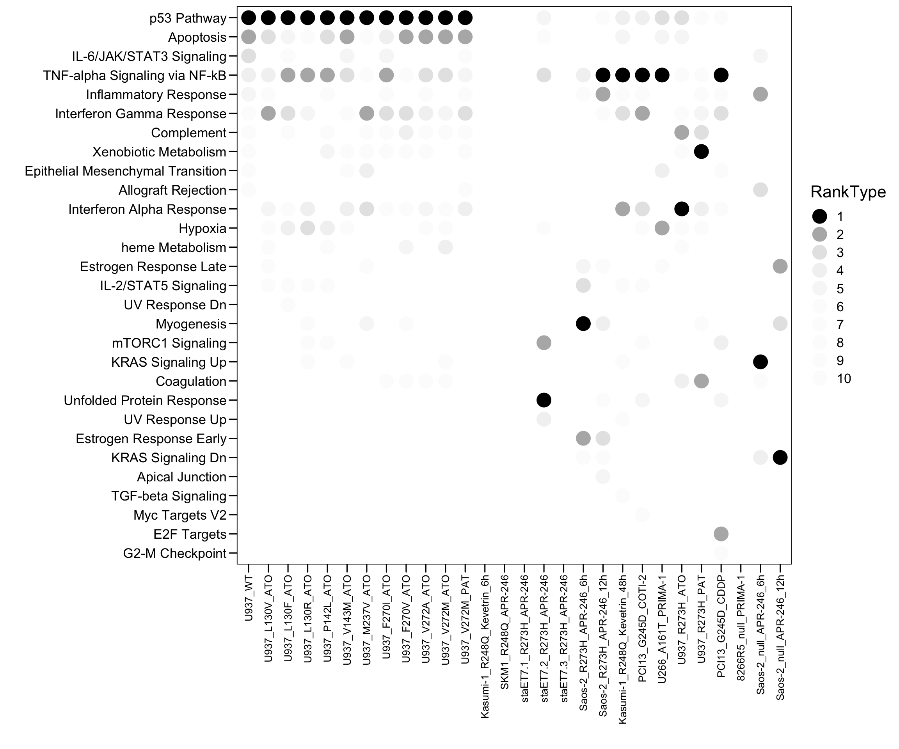
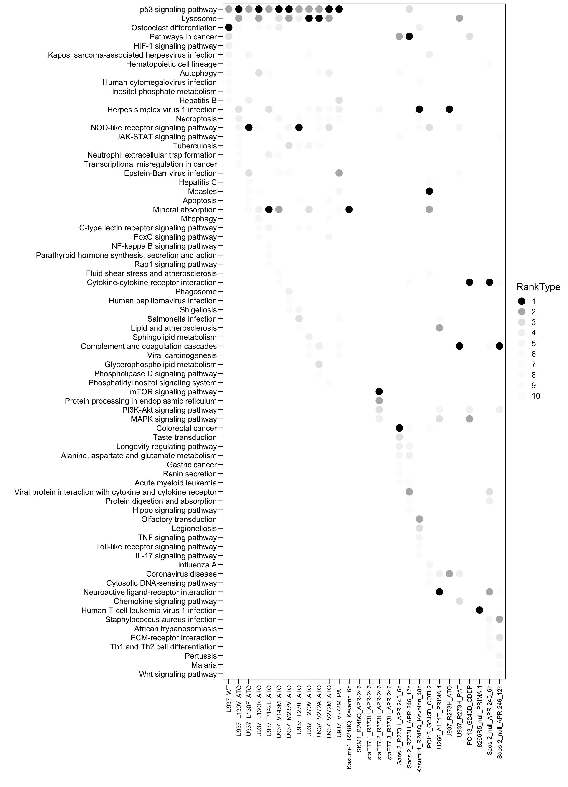
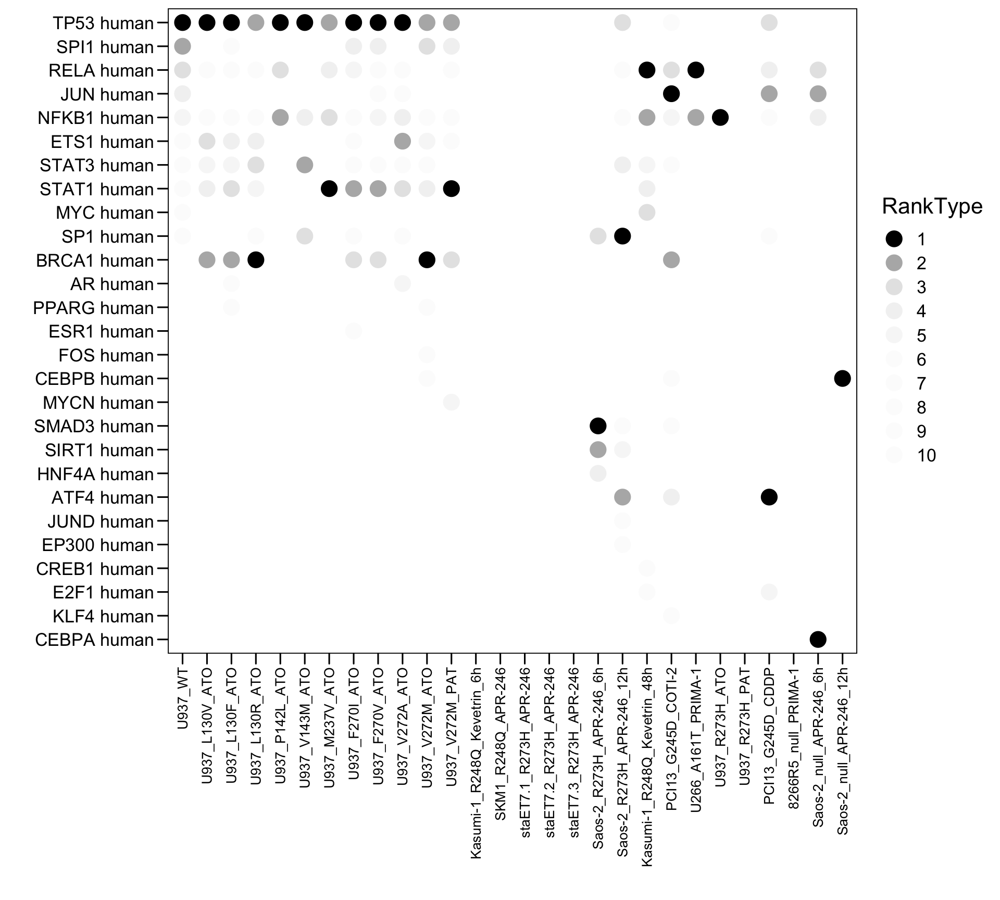

Chapter 4 Enrichment analysis
4.1 Calculated DEGs
The differentially expressed genes (DEGs) was calculated using FC > 1.5 (log2FC > 0.58).
websiteLive <- TRUE
dbs <- listEnrichrDbs()
if (websiteLive) head(dbs)
gene.enrich <- list()
compare.group <- unique(merge.compare.data$Group)
for (i in 1:length(compare.group) ) {
sub.sample <- merge.compare.data[which(merge.compare.data$Group == compare.group[i]), ]
if (nrow(sub.sample) == 1) {
sub <- rownames(compare.mat[which(compare.mat[, sub.sample$Sample] > 0.58 ), ])
} else {
sub <- rownames(compare.mat[which(rowMeans(compare.mat[, sub.sample$Sample]) > 0.58 ), ])
}
gene.enrich <- c(gene.enrich, list(sub = sub))
}
names(gene.enrich) <- compare.group4.2 Enrichr analysis
Enrichment analysis was conducted by Enrichr (https://maayanlab.cloud/Enrichr/).
enrichr.total <- NULL
enrichr.db.name <- c("KEGG_2021_Human","MSigDB_Hallmark_2020","TRRUST_Transcription_Factors_2019")
for (i in 1:length(gene.enrich)) {
message(i, " ", names(gene.enrich)[i] )
enrichr.sub <- enrichr(gene.enrich[[i]], enrichr.db.name)
enrichr.sub$`KEGG_2021_Human`$Database <- "KEGG_2021_Human"
enrichr.sub$`MSigDB_Hallmark_2020`$Database <- "MSigDB_Hallmark_2020"
enrichr.sub$`TRRUST_Transcription_Factors_2019`$Database <- "TRRUST_Transcription_Factors_2019"
sub <- rbind(enrichr.sub$`KEGG_2021_Human`,
enrichr.sub$`MSigDB_Hallmark_2020`,
enrichr.sub$`TRRUST_Transcription_Factors_2019` )
sub$Sample <- names(gene.enrich)[i]
enrichr.total <- rbind(enrichr.total, sub)
}
plot.data <- enrichr.total[which(enrichr.total$P.value < 0.05), ]
plot.data <- plot.data[-grep(" mouse$", plot.data$Term), ]
plot.data$Old.P.value <- NULL
plot.data$Old.Adjusted.P.value <- NULL
plot.data$Count <- as.numeric(str_replace_all(plot.data$Overlap, regex("/.+"), ""))
plot.data <- plot.data[which(plot.data$Count >= 10), ]
plot.data$Sample <- factor(as.character(plot.data$Sample), levels = names(gene.enrich))
plot.data <- plot.data[order(plot.data$Sample, plot.data$Database, plot.data$P.value), ]
plot.data$Rank <- NA
for (i in 1:length(names(gene.enrich))) {
for (j in 1:length(enrichr.db.name)) {
idx <- which(plot.data$Database == enrichr.db.name[j] & plot.data$Sample == names(gene.enrich)[i])
if (length(idx) > 0) plot.data$Rank[idx] = 1:length(idx)
}
}
plot.data <- plot.data[, c("Sample","Term","Count","Overlap","P.value","Adjusted.P.value","Odds.Ratio","Combined.Score","Genes","Rank","Database")]4.3 MSigDB Hallmark
# HALLMARK
plot.data <- read.xlsx("01.Profiling/Table3.xlsx", sheet = 1, startRow = 6)
plot.data <- plot.data[, 1:9]
colnames(plot.data) <- c("Sample","Term","Top","Count","Genes","Overlap","Pvalue","logP","Padj")
plot.order <- c("U937_WT","U937_L130V_ATO","U937_L130F_ATO","U937_L130R_ATO","U937_P142L_ATO","U937_V143M_ATO","U937_M237V_ATO","U937_F270I_ATO","U937_F270V_ATO","U937_V272A_ATO","U937_V272M_ATO","U937_V272M_PAT","Kasumi-1_R248Q_Kevetrin_6h","SKM1_R248Q_APR-246","staET7.1_R273H_APR-246","staET7.2_R273H_APR-246","staET7.3_R273H_APR-246","Saos-2_R273H_APR-246_6h","Saos-2_R273H_APR-246_12h","Kasumi-1_R248Q_Kevetrin_48h","PCI13_G245D_COTI-2","U266_A161T_PRIMA-1","U937_R273H_ATO","U937_R273H_PAT","PCI13_G245D_CDDP","8266R5_null_PRIMA-1","Saos-2_null_APR-246_6h","Saos-2_null_APR-246_12h")
plot.data$Sample <- factor(as.character(plot.data$Sample), levels = rev(plot.order))
plot.data$Type <- "MUT"
plot.data$Type[plot.data$Sample %in% c("U937_WT") ] <- "WT"
plot.data$Type[plot.data$Sample %in% c("266R5_null_PRIMA-1","Saos-2_null_APR-246_6h","Saos-2_null_APR-246_12h")] <- "null"
plot.data$Type <- factor(as.character(plot.data$Type), levels = c("WT","MUT","null"))
plot.data$RankType <- plot.data$Top
plot.data$RankType <- as.factor(plot.data$RankType)
plot.data.sub <- plot.data[which(plot.data$Top <= 5), ]
p <- ggplot(plot.data.sub, aes(x = Sample, y = Term, fill = RankType, color = RankType)) + geom_point(size = 6)
p <- p + scale_color_manual(values = c(`1` = "black",`2` = "#b5b5b5",`3` = "#e5e5e5",`4` = "#f2f2f2",`5` = "#f7f7f7",`6` = "#fcfcfc",`7` = "#fcfcfc",`8` = "#fcfcfc",`9` = "#fcfcfc",`10` = "#fcfcfc") )
#p <- p + geom_text((aes(label = Rank)), size = 3, color = "white")
p <- p + scale_x_discrete(limits = plot.order)
p <- p + scale_y_discrete(limits = rev(c("p53 Pathway","Apoptosis","IL-6/JAK/STAT3 Signaling","TNF-alpha Signaling via NF-kB","Inflammatory Response","Interferon Gamma Response","Interferon Alpha Response","Hypoxia","Xenobiotic Metabolism","Epithelial Mesenchymal Transition","Myogenesis","Complement","heme Metabolism","Unfolded Protein Response","mTORC1 Signaling","UV Response Up","Estrogen Response Early","IL-2/STAT5 Signaling","Estrogen Response Late","Apical Junction","Coagulation","E2F Targets","KRAS Signaling Up","Allograft Rejection","KRAS Signaling Dn")) )
p <- p + theme_base() + theme(plot.background = element_blank())
p <- p + theme(axis.text.x = element_text(angle = 90, hjust = 1, vjust = 0.5, size = 10, color = "black"))
p <- p + xlab("") + ylab("")
p
plot.data.sub <- plot.data[which(plot.data$Top <= 10), ]
p <- ggplot(plot.data.sub, aes(x = Sample, y = Term, fill = RankType, color = RankType)) + geom_point(size = 6)
p <- p + scale_color_manual(values = c(`1` = "black",`2` = "#b5b5b5",`3` = "#e5e5e5",`4` = "#f2f2f2",`5` = "#f7f7f7",`6` = "#fcfcfc",`7` = "#fcfcfc",`8` = "#fcfcfc",`9` = "#fcfcfc",`10` = "#fcfcfc") )
#p <- p + geom_text((aes(label = Rank)), size = 3, color = "white")
p <- p + scale_x_discrete(limits = plot.order)
p <- p + scale_y_discrete(limits = rev(c("p53 Pathway","Apoptosis","IL-6/JAK/STAT3 Signaling","TNF-alpha Signaling via NF-kB","Inflammatory Response","Interferon Gamma Response","Complement","Xenobiotic Metabolism","Epithelial Mesenchymal Transition","Allograft Rejection","Interferon Alpha Response","Hypoxia","heme Metabolism","Estrogen Response Late","IL-2/STAT5 Signaling","UV Response Dn","Myogenesis","mTORC1 Signaling","KRAS Signaling Up","Coagulation","Unfolded Protein Response","UV Response Up","Estrogen Response Early","KRAS Signaling Dn","Apical Junction","TGF-beta Signaling","Myc Targets V2","E2F Targets","G2-M Checkpoint")) )
p <- p + theme_base() + theme(plot.background = element_blank())
p <- p + theme(axis.text.x = element_text(angle = 90, hjust = 1, vjust = 0.5, size = 10, color = "black"))
p <- p + xlab("") + ylab("")
p
4.4 KEGG
# KEGG
plot.data <- read.xlsx("01.Profiling/Table3.xlsx", sheet = 1, startRow = 6)
plot.data <- plot.data[, 10:18]
colnames(plot.data) <- c("Sample","Term","Top","Count","Genes","Overlap","Pvalue","logP","Padj")
plot.order <- c("U937_WT","U937_L130V_ATO","U937_L130F_ATO","U937_L130R_ATO","U937_P142L_ATO","U937_V143M_ATO","U937_M237V_ATO","U937_F270I_ATO","U937_F270V_ATO","U937_V272A_ATO","U937_V272M_ATO","U937_V272M_PAT","Kasumi-1_R248Q_Kevetrin_6h","SKM1_R248Q_APR-246","staET7.1_R273H_APR-246","staET7.2_R273H_APR-246","staET7.3_R273H_APR-246","Saos-2_R273H_APR-246_6h","Saos-2_R273H_APR-246_12h","Kasumi-1_R248Q_Kevetrin_48h","PCI13_G245D_COTI-2","U266_A161T_PRIMA-1","U937_R273H_ATO","U937_R273H_PAT","PCI13_G245D_CDDP","8266R5_null_PRIMA-1","Saos-2_null_APR-246_6h","Saos-2_null_APR-246_12h")
plot.data$Sample <- factor(as.character(plot.data$Sample), levels = rev(plot.order))
plot.data$Type <- "MUT"
plot.data$Type[plot.data$Sample %in% c("U937_WT") ] <- "WT"
plot.data$Type[plot.data$Sample %in% c("266R5_null_PRIMA-1","Saos-2_null_APR-246_6h","Saos-2_null_APR-246_12h")] <- "null"
plot.data$Type <- factor(as.character(plot.data$Type), levels = c("WT","MUT","null"))
plot.data$RankType <- plot.data$Top
plot.data$RankType <- as.factor(plot.data$RankType)
plot.data.sub <- plot.data[which(plot.data$Top <= 10), ]
p <- ggplot(plot.data.sub, aes(x = Sample, y = Term, fill = RankType, color = RankType)) + geom_point(size = 5)
p <- p + scale_color_manual(values = c(`1` = "black",`2` = "#b5b5b5",`3` = "#e5e5e5",`4` = "#f2f2f2",`5` = "#f7f7f7",`6` = "#fcfcfc",`7` = "#fcfcfc",`8` = "#fcfcfc",`9` = "#fcfcfc",`10` = "#fcfcfc") )
#p <- p + geom_text((aes(label = Rank)), size = 3, color = "white")
p <- p + scale_x_discrete(limits = plot.order)
p <- p + scale_y_discrete(limits = rev(c("p53 signaling pathway","Lysosome","Osteoclast differentiation","Pathways in cancer","HIF-1 signaling pathway","Kaposi sarcoma-associated herpesvirus infection","Hematopoietic cell lineage","Autophagy","Human cytomegalovirus infection","Inositol phosphate metabolism","Hepatitis B","Herpes simplex virus 1 infection","Necroptosis","NOD-like receptor signaling pathway","JAK-STAT signaling pathway","Tuberculosis","Neutrophil extracellular trap formation","Transcriptional misregulation in cancer","Epstein-Barr virus infection","Hepatitis C","Measles","Apoptosis","Mineral absorption","Mitophagy","C-type lectin receptor signaling pathway","FoxO signaling pathway","NF-kappa B signaling pathway","Parathyroid hormone synthesis, secretion and action","Rap1 signaling pathway","Fluid shear stress and atherosclerosis","Cytokine-cytokine receptor interaction","Phagosome","Human papillomavirus infection","Shigellosis","Salmonella infection","Lipid and atherosclerosis","Sphingolipid metabolism","Complement and coagulation cascades","Viral carcinogenesis","Glycerophospholipid metabolism","Phospholipase D signaling pathway","Phosphatidylinositol signaling system","mTOR signaling pathway","Protein processing in endoplasmic reticulum","PI3K-Akt signaling pathway","MAPK signaling pathway","Colorectal cancer","Taste transduction","Longevity regulating pathway","Alanine, aspartate and glutamate metabolism","Gastric cancer","Renin secretion","Acute myeloid leukemia","Viral protein interaction with cytokine and cytokine receptor","Protein digestion and absorption","Hippo signaling pathway","Olfactory transduction","Legionellosis","TNF signaling pathway","Toll-like receptor signaling pathway","IL-17 signaling pathway","Influenza A","Coronavirus disease","Cytosolic DNA-sensing pathway","Neuroactive ligand-receptor interaction","Chemokine signaling pathway","Human T-cell leukemia virus 1 infection","Staphylococcus aureus infection","African trypanosomiasis","ECM-receptor interaction","Th1 and Th2 cell differentiation","Pertussis","Malaria","Wnt signaling pathway")) )
p <- p + theme_base() + theme(plot.background = element_blank())
p <- p + theme(axis.text.x = element_text(angle = 90, hjust = 1, vjust = 0.5, size = 10, color = "black"))
p <- p + xlab("") + ylab("")
p
4.5 TRRUST
# TRUST
plot.data <- read.xlsx("01.Profiling/Table3.xlsx", sheet = 1, startRow = 6)
plot.data <- plot.data[, 19:27]
colnames(plot.data) <- c("Sample","Term","Top","Count","Genes","Overlap","Pvalue","logP","Padj")
plot.order <- c("U937_WT","U937_L130V_ATO","U937_L130F_ATO","U937_L130R_ATO","U937_P142L_ATO","U937_V143M_ATO","U937_M237V_ATO","U937_F270I_ATO","U937_F270V_ATO","U937_V272A_ATO","U937_V272M_ATO","U937_V272M_PAT","Kasumi-1_R248Q_Kevetrin_6h","SKM1_R248Q_APR-246","staET7.1_R273H_APR-246","staET7.2_R273H_APR-246","staET7.3_R273H_APR-246","Saos-2_R273H_APR-246_6h","Saos-2_R273H_APR-246_12h","Kasumi-1_R248Q_Kevetrin_48h","PCI13_G245D_COTI-2","U266_A161T_PRIMA-1","U937_R273H_ATO","U937_R273H_PAT","PCI13_G245D_CDDP","8266R5_null_PRIMA-1","Saos-2_null_APR-246_6h","Saos-2_null_APR-246_12h")
plot.data$Sample <- factor(as.character(plot.data$Sample), levels = rev(plot.order))
plot.data$Type <- "MUT"
plot.data$Type[plot.data$Sample %in% c("U937_WT") ] <- "WT"
plot.data$Type[plot.data$Sample %in% c("266R5_null_PRIMA-1","Saos-2_null_APR-246_6h","Saos-2_null_APR-246_12h")] <- "null"
plot.data$Type <- factor(as.character(plot.data$Type), levels = c("WT","MUT","null"))
plot.data$RankType <- plot.data$Top
plot.data$RankType <- as.factor(plot.data$RankType)
plot.data.sub <- plot.data[which(plot.data$Top <= 10), ]
p <- ggplot(plot.data.sub, aes(x = Sample, y = Term, fill = RankType, color = RankType)) + geom_point(size = 5)
p <- p + scale_color_manual(values = c(`1` = "black",`2` = "#b5b5b5",`3` = "#e5e5e5",`4` = "#f2f2f2",`5` = "#f7f7f7",`6` = "#fcfcfc",`7` = "#fcfcfc",`8` = "#fcfcfc",`9` = "#fcfcfc",`10` = "#fcfcfc") )
#p <- p + geom_text((aes(label = Rank)), size = 3, color = "white")
p <- p + scale_x_discrete(limits = plot.order)
p <- p + scale_y_discrete(limits = rev(c("TP53 human","SPI1 human","RELA human","JUN human","NFKB1 human","ETS1 human","STAT3 human","STAT1 human","MYC human","SP1 human","BRCA1 human","AR human","PPARG human","ESR1 human","FOS human","CEBPB human","MYCN human","SMAD3 human","SIRT1 human","HNF4A human","ATF4 human","JUND human","EP300 human","CREB1 human","E2F1 human","KLF4 human","CEBPA human")) )
p <- p + theme_base() + theme(plot.background = element_blank())
p <- p + theme(axis.text.x = element_text(angle = 90, hjust = 1, vjust = 0.5, size = 10, color = "black"))
p <- p + xlab("") + ylab("")
p